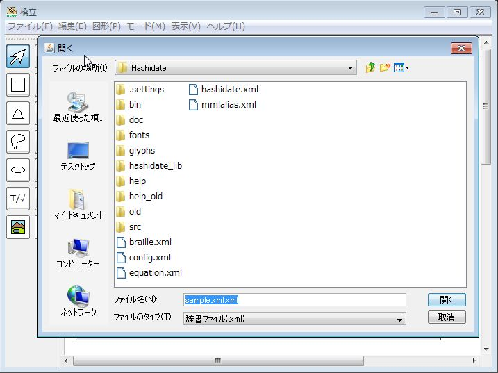
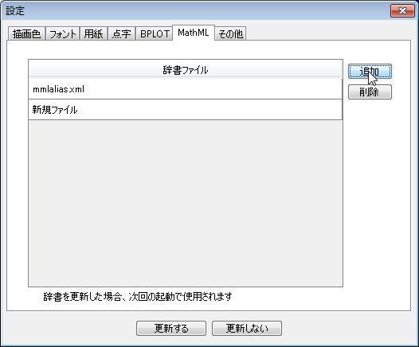

設定
設定の開始と更新
設定画面を表示する
- (1)
ヘルプ メニューで設定 をクリックする →設定 画面が表示される→
設定を更新する
- (1)
更新する ボタンをクリックする → 設定が更新される
色、図形のパターン
図形の色を設定する
- (1) 設定画面で
描画色 タブをクリックする - (2) 図形を追加した場合に表示される色を設定するには、
色の既定値 にある各色の右横のボタンをクリックする → 各色の選択画面が表示される。以下では、線・文字の色 画面を例に説明する→ 
- (3) 色をクリックする → 色が選択される

- (4)
OK ボタンをクリックする →線・文字の色 画面が閉じて、設定 画面のボタンの色とサンプルが選択した色で表示される
線の種類を設定する
未実装
内部のパターンを設定する
未実装
フォント
- (1) 設定画面で
フォント タブをクリックする - (2) テキストまたは数式の
フォント名 、サイズ 、スタイル を選択する →設定 画面のサンプルが選択したフォントで表示される
→
墨字の用紙
設定画面を表示する
- (1) 設定画面で
用紙 タブをクリックする
既定値の用紙を設定する
- (1) 用紙のリストで、既定にしたい用紙をクリックする
- (2)
デフォルト をチェックする
用紙を追加する
- (1)
追加 ボタンをクリックする → 新しい行がリストに追加される - (2) 名称、幅、高さを入力する
→
用紙を削除する
- (1) 用紙のリストから削除する用紙を選択する
- (2)
削除 ボタンをクリックする → 用紙のリストから用紙が削除される
点字
設定画面を表示する
- (1) 設定画面で
点字 タブをクリックする
図に使う点を変更する
- (1) 図形やテキスト/数式を点字モードで表示する場合の点を、
点図 、点字 の大点 、中点 、小点 から選択する
初期値：点図の点 中点、点字の点 中点 - (2) 点図での点の間隔を、
間隔 に入力する
初期値：2.0 mm - (3) 点字での1マスの点の間隔を、
横方向 、縦方向 に0.1mm単位で入力する
初期値：横方向2.1 mm、縦方向2.4 mm - (4) 点字でのマスの間隔と行の間隔を、
マス間 、行間 に0.1mm単位で入力する
点の大きさを変更する
- (1) 大中小の各点の大きさを
点の大きさ に点の種類ごとに0.1mm単位で入力する
初期値：小点 0.5 mm、中点 1.2 mm、大点 1.4 mm
点字変換を変更する
- (1) テキストを入力した時、自動で点字に変換しない場合は
テキストを点字に変換する をチェックを外す
墨字を点字に変換するための辞書ファイルを追加する
- (1)
テキスト用 か数式用 か、追加したい辞書ファイルをクリックするテキスト用
数式用
- (2)
追加 ボタンをクリックする → 辞書ファイルを選択するウィンドウが表示される - (3) ファイル名を入力する
辞書ファイルを削除する
- (1)
テキスト用 か数式用 か、削除したい辞書ファイルをクリックするテキスト用
数式用
- (1) 辞書ファイルのリストで削除したいファイル名を選択する
- (2)
削除 ボタンをクリックする → リストからファイルが削除される
BPLOT
設定画面を表示する
- (1) 設定画面で
BPLOT タブをクリックする
BPLOT出力で想定する用紙を設定する
- (1) A4用紙とB5用紙の大きさを入力する
- (2) 画面に用紙の大きさを示す枠を表示する場合は
用紙枠を表示する をチェックし、表示する色を選ぶ
BPLOT出力での動作を設定する(印字は未実装)
- (1) ファイルに出力する場合は
ファイル 、プリンタで印字する場合は印字 を選択するファイルに出力
印字
- (2)
をクリックして、印字する場合に使用する実行ファイルを選択する
⇒ - (3) 印字するプリンタを選択する

片面印字のプリンタ用の裏点を設定する
- (1) 裏点の横の位置を補正する距離を
裏点の位置補正 に入力する - (2) 裏点を先に出力する場合は
裏点を先に出力する をチェックする
描画の属性を設定する
- (1) 原点を左上にとる場合は
原点を左下にとる のチェックをはずす
- (2) 点字を6点の点で出力する場合は
NABCCを出力する のチェックをはずす
MathML
設定画面を表示する
- (1) 設定画面で
MathML タブをクリックする
記号をUnicodeに変換するための辞書ファイルを追加する
- (1)
追加]ボタンをクリックする → 辞書ファイルのリストに行が追加される - (2) ファイル名を入力する

- (2) ファイル名を入力する
辞書ファイルを削除する
- (1) 辞書ファイルのリストで削除したいファイルを選択する
- (2)
削除 ボタンをクリックする → リストからファイルが削除される
その他
設定画面を表示する
- (1) 設定画面で
その他 タブをクリックする
Ctrlキーとカーソルを同時に押しつづけた場合に図形を移動する距離を設定する
- (1)
カーソルによる図形の移動量 で移動量を設定する
SVGで出力した数式をブラウザで表示するために大きさを調整する拡大・縮小率を設定する
- (1)
数式をSVG出力するときの拡大・縮小率 に通常の場合とイタリックの場合の値を入力する